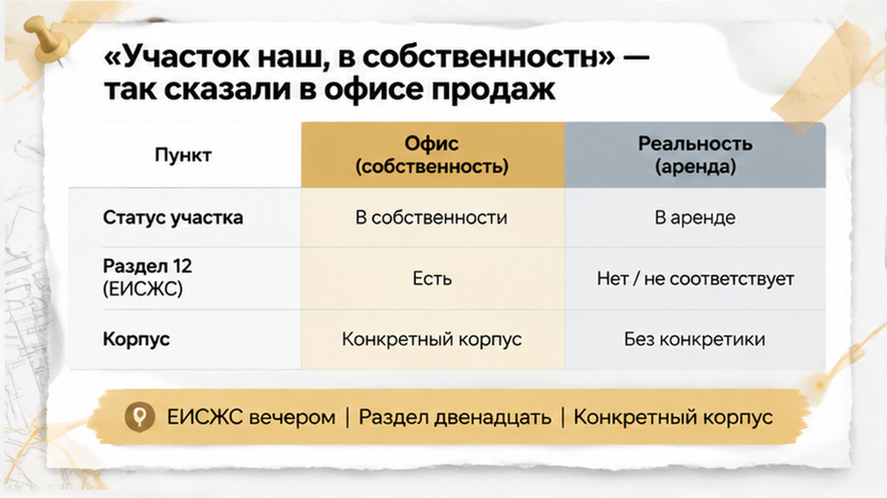
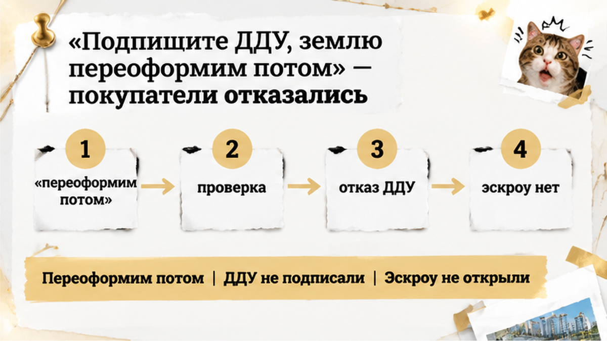

150 000 ₽ брони семья в Тюмени вернула после вечерней проверки — в офисе продаж участок называли собственностью, а в проектной декларации нашли аренду до 2049 года. За четыре дня до подписания ДДУ, перед поездкой в банк, покупатели открыли ЕИСЖС и увидели другую форму права на землю. Застройщик предложил подписать договор, перевести деньги на эскроу, а участок «переоформить потом». Семья с двумя детьми и инвестор отказались от ДДУ не потому, что аренда автоматически делает стройку незаконной, а потому, что устное обещание не совпало с официальным документом.
Я — Святослав Шакин, The Риэлтор, Тюмень. В Telegram разбираю такие ситуации до перевода денег на эскроу. Дублирую материалы в MAX — выбирайте удобную площадку.

В офисе продаж семья выбирала квартиру под семейную ипотеку: обсуждали планировку, будущий платёж и поездку в банк. Рядом с будущей покупкой был инвестор.
Менеджер несколько раз повторил: «Участок наш, в собственности».
После этого семья оформила бронь на 150 000 ₽. Но бронь — не юридическая проверка: она лишь фиксирует договорённость о квартире на определённый срок, а порядок возврата зависит от отдельного соглашения.
Здесь важно не смешивать два вопроса. Аренда участка сама по себе не означает, что дом строится незаконно. По 214-ФЗ застройщик может привлекать деньги дольщиков, если у него зарегистрирована собственность на землю, договор аренды или субаренды. В предусмотренных законом случаях возможно и безвозмездное пользование.
Но аренда — не собственность. После регистрации ДДУ у дольщика возникает залог на право аренды или субаренды и на строящийся объект, а не на сам участок как на землю застройщика. Это другая юридическая конструкция, которую лучше понимать до подписи.
В тюменских декларациях встречаются оба варианта: где-то указана собственность, где-то — аренда с отдельным собственником и сроком договора. Поэтому проблема была не в самом слове «аренда», а в том, что в офисе сказали одно, а официальный документ мог показать другое.
Перед визитом в банк покупатели вечером зашли в ЕИСЖС через наш.дом.рф и открыли декларацию именно по нужному корпусу и этапу строительства.
Это важно: у домов одного бренда участки могут различаться. Сведения о застройщике в целом нельзя автоматически переносить на конкретный корпус.
В разделе 12 покупатели увидели право аренды государственного или муниципального участка со сроком до 2049 года. Возник прямой вопрос к продавцу: почему официальная форма права не совпадает с тем, что говорили при бронировании?
Проектная декларация — не рекламная презентация, а обязательный официальный документ о правах на землю. Изменения вносятся через ЕИСЖС ежемесячно, не позднее 10-го числа следующего месяца. По требованию дольщика застройщик также должен предоставить документы для ознакомления.
Покупателям нужно было сверить не только дату окончания аренды, но и собственника участка, реквизиты и регистрацию договора, кадастровый номер и соответствие данных выбранному корпусу.
Именно здесь слова из офиса продаж превращаются в проверяемый вопрос: какое право указано на землю, кто её собственник и действует ли это право для конкретного дома?
Застройщик предложил подписать ДДУ, а землю переоформить позже. Но будущая возможность не равна уже существующему праву. Пока изменения не отражены в официальных документах и не объяснены письменно, покупатель видит форму права, указанную в декларации на момент проверки.
Само наличие аренды не означает, что семейную ипотеку обязательно не одобрят. Но расхождение между словами в офисе и сведениями ЕИСЖС — достаточная причина поставить сделку на паузу и не переводить деньги на эскроу только потому, что бронь уже оформлена.
Вечером, за четыре дня до подписания ДДУ, покупатели открыли проектную декларацию в ЕИСЖС — документ по конкретному корпусу и этапу строительства, а не презентацию из офиса.
В разделе 12 обнаружилось то, о чём менеджер не говорил: под домом указан государственный или муниципальный участок, переданный в аренду до 2049 года.
А в офисе несколько раз повторяли:
«Участок наш, в собственности».
Сам факт аренды не означает, что дом строится незаконно. 214-ФЗ допускает привлечение денег дольщиков, если у застройщика зарегистрировано право собственности, аренды или субаренды на землю. В предусмотренных законом случаях возможно и безвозмездное пользование.
Но аренда — не собственность. При зарегистрированном ДДУ у дольщика возникает залог на право аренды или субаренды и на строящийся объект, а не на участок как на собственную землю застройщика. Это другая юридическая конструкция, которую лучше понимать до подписи.
В разделе 12 смотрят не только на слово «аренда», но и на поля 12.1.1, 12.1.3–12.1.6, 12.2 и 12.3:
Эти данные сопоставляют с адресом, разрешением на строительство, проектом ДДУ и конкретным корпусом. У домов одного бренда земля может быть разной: в одной декларации — собственность, в другой — аренда с отдельным собственником и сроком.
Длинный срок аренды не превращает её в собственность и не подтверждает автоматически, что землю позже переоформят. Если срок не перекрывает строительство, ввод дома и передачу квартиры, нужно запросить документы и письменные пояснения.
Проектная декларация — официальный документ. Сведения о правах на землю раскрываются в ней, а изменения в ЕИСЖС вносятся ежемесячно, не позднее 10-го числа следующего месяца. По требованию дольщика застройщик должен предоставить документы для ознакомления.
В тот вечер покупатели увидели не «опасное слово», а несостыковку: в офисе звучало «земля наша», а в официальном разделе — аренда до 2049 года и другой собственник.
После вопроса о разделе 12 менеджер предложил не останавливать сделку:
«Подписывайте ДДУ, землю переоформим потом».
Но «потом» — ещё не зарегистрированное право и не условие договора. Будущая возможность не равна документу, который покупатель видит сейчас.

Семья отказалась подписывать ДДУ и не переводила деньги на эскроу. Причина была не в том, что аренда автоматически делает проект незаконным, и не в предположении, что банк обязательно откажет в семейной ипотеке. Слова в офисе продаж просто не совпали с официальной декларацией.
Бронь уже внесли, но она не заменяет юридическую проверку. Это отдельное соглашение, которое временно удерживает квартиру на согласованных условиях; порядок отмены и возврата денег зависит от его текста.
Перед переводом денег нужно было получить понятный ответ: какое право указано на землю конкретного корпуса, кто её собственник, на каком основании действует аренда и почему менеджер называет участок собственностью застройщика.
Ответ «всё переоформим потом» разницу не устраняет.
В другой сделке пауза может понадобиться из-за изменившейся ставки или платежа. Например, перед подписанием ДДУ важно проверить, не изменились ли существенные условия: банк поднял ставку по ипотеке, и покупатель остановил сделку.
Здесь вопрос оказался земельным, но принцип тот же: сначала сверить документы, потом переводить деньги.
Покупатели выбрали паузу, пока официальная бумага и обещание в офисе не будут приведены к одному ясному ответу. Это не обвинение застройщика и не вывод о незаконности проекта. ДДУ не подписывают на основании фразы, которую предлагают исполнить когда-нибудь позже.
Подписывать ДДУ с расчётом на будущую смену права покупатели не стали: деньги на эскроу ещё не переводили. Бронь отменили, а 150 000 ₽ вернули через двенадцать дней — по условиям соглашения о бронировании.
В офисе говорили «участок наш, в собственности», а в разделе 12 указали аренду до 2049 года, другого собственника и зарегистрированное право пользования. Семья остановилась до перевода денег на эскроу — и именно поэтому сумма вернулась, а не растворилась в обещании «переоформим потом».
Устное «переоформим потом» не заменяет сведения ЕИСЖС и условия договора. Перед переводом денег на эскроу покупатели сверяют декларацию, землю и ДДУ. Обещание продавца должно совпадать с тем, что закреплено на бумаге: что делать, если обещания в офисе не совпадают с документами.
Вы бы подписали ДДУ, если участок под домом в аренде до 2049 года, а застройщик обещает переоформить его потом?
Раздел 12 проектной декларации находится в ЕИСЖС и на наш.дом.рф. Открывать нужно декларацию именно того корпуса и этапа, который покупается: один бренд не означает, что у всех домов одинаковые участки и право на землю.
| Что смотреть | Что должно быть понятно |
|---|---|
| 12.1.1 — вид права | Собственность, аренда или субаренда. Само слово «аренда» не означает автоматический запрет на покупку. |
| 12.1.3–12.1.5 — реквизиты права | Номер, дата договора и сведения о его регистрации. |
| 12.1.6 — окончание права | Дата окончания аренды. Её сопоставляют со сроками строительства, ввода дома и передачи квартиры. |
| 12.2 — собственник участка | Кому принадлежит земля: застройщику, государству, муниципалитету или другому лицу. |
| 12.3 — кадастровый номер и площадь | Совпадает ли участок с разрешением на строительство, адресом и проектом ДДУ. |
Если аренда заканчивается раньше предполагаемой передачи квартиры, это не повод самому объявлять проект незаконным. Но стоит запросить документы и письменное объяснение: какой участок относится к корпусу, что разрешает договор аренды и перекрывает ли срок необходимые этапы строительства.
Проектную декларацию обновляют через ЕИСЖС ежемесячно, не позднее 10-го числа следующего месяца. Перед ДДУ смотрят актуальную версию, а не старый файл из переписки. По требованию дольщика застройщик также должен предоставить документы для ознакомления.
Одобрение семейной ипотеки не отменяет проверку земли. Важны решение банка, сам объект, текст ДДУ и порядок открытия эскроу: почему одобренная ипотека ещё не означает, что деньги дошли до эскроу.
Я, Святослав Шакин, The Риэлтор в Тюмени. Разбираю декларацию и условия сделки до перевода денег, без рекламного тумана. Подписывайтесь на Telegram или добавляйтесь в MAX — выбирайте удобную площадку.
В этой истории раздел 12 открыли за четыре дня до визита в банк. Семья увидела аренду до 2049 года, не подписала ДДУ и вернула бронь до перевода денег на эскроу.
Спокойствие в сделке появляется не тогда, когда покупатель знает все ответы, а когда задаёт вопросы до аванса. Если слова в офисе расходятся с официальным документом, сделку можно поставить на паузу, получить письменное объяснение и только потом принимать решение.